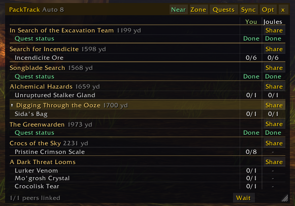

PackTrack
See your party's quest progress side by side, for WoW: Forever. Made for friends and couples who quest together.
Nothing matches that search.
Overview
PackTrack puts every objective of your quests in one small window, with a column for you and one for each party member who also runs PackTrack. You see at a glance who still needs 3 more Raptor Talons and who is done.

One line per objective, one column per player, difficulty-coloured titles.
See a teammate's quest and progress even after you finished it yourself.
See quests your party has that you don't, and ask them to share.
Arrows on party portraits, plus a navigation arrow to your quest, a rally point or the leader.
Why PackTrack
I made PackTrack for my wife and me. We quest together and wanted to keep the immersion while still knowing where each of us stands on a quest.
It is not Questie, Zygor or RestedXP. It doesn't tell you where to go to level faster, and it doesn't show the world what you're running (Questie is an amazing addon; this just isn't that). It's for friends and spouses who like to play through the content together.
We used it through the whole beta, so it has hundreds of hours of testing across many versions. It is lightweight and works the moment you group up.
Installing
- Download the zip from CurseForge.
- Unzip it into
Interface\AddOnsso you haveInterface\AddOns\PackTrack\PackTrack.toc. - Log in and join a party. The tracker appears on its own.
The tracker
- One line per objective, one column per player: You first, then party members running PackTrack, in class colours.
- Quest titles use the game's difficulty colours (grey, green, yellow, orange, red).
- The focused quest (the one your arrow points at) is highlighted. Grid lines separate quests, rows and players.
- Hover an objective for the full text, each player's status and who still needs it.
- Left-click a quest title to collapse it. Right-click it to point the navigation arrow at it; it also becomes the game's focused quest.
- Each quest has a Share button. After you share, every player's answer (accepted, already has it, log full…) shows on the title line for 20 seconds.
- Drag the title bar to move it and the corner to resize it. Tracker scale (0.6 to 1.5) is on the Tracker tab.
Reading the columns
| Cell | Meaning |
|---|---|
3/15 | Progress on that objective. Green when done. |
Done | The quest is complete, ready to turn in (or, on a Helping quest, you already finished it). |
- | Not in that player's quest log. |
? | No reply yet from that player. |
off | The player is offline. |
| dimmed count | The last update is old (stale). |
The footer shows how many party members are linked (running PackTrack and replying).
Choosing quests
Auto mode shows your focused quest and the quests in the game's own tracker, up to 8. The title bar says Auto 8 when it is on.
The Quests picker lists your whole log in a scrolling list. Tick exactly the quests you want and Auto turns off; /packtrack auto turns it back on.
Under Your party has the picker lists quests teammates have that you don't, with who has each one. Ask sends a share request; clicking the quest itself shows it in your tracker as a Helping quest (a check mark shows it is picked).
Helping new in 0.8.5
When you help a partner with a quest you already finished, it's not in your log anymore, but you still want to see how they're doing.
- A teammate's focused quest that you don't have shows in your tracker as Helping: with the quest name and their progress.
- Your column says Done if your character already completed it.
- To keep any other teammate quest shown, click it under Your party has in the Quests picker. Click again to remove it.
- Up to 4 Helping quests show at once, after your own quests. The navigation arrow only points at quests in your log.
Turn it off with Show teammates' quests I don't have on the Party quests tab.
Zone tracking
Zone sets the game's tracked quests to the quests filed under your zone in the quest log, up to the game's limit of 25. Class, profession and dungeon quests count when their map is in your zone.
With Auto-track my zone's quests on, this happens a few seconds after each zone change, and new quests you accept are tracked or untracked by zone too.
Not sure why a quest was or wasn't tracked? /packtrack debug explains each decision.
Party quests and sharing
- Show quests my party has that I don't fills the "Your party has" list in the picker.
- Share requests: when a teammate asks you to share, PackTrack can Ask me (a popup), Always allow, or be Off.
- Show quest share results in the tracker: after a share, see who accepted, who already has it, or whose log is full.
Following quest focus
With Share my quest focus on, your party can see which quest you're working on. Set Follow quest focus to Party leader to have your tracker and arrow follow the leader's quest.
To follow anyone else, right-click their name in the tracker. Right-click a quest title to stop following.
Progress notices
Get a chat line (and optionally an on-screen message) when teammates make progress:
| Setting | You're told when |
|---|---|
| Off | Never |
| Ready to turn in | A teammate completes a quest (default) |
| Objectives finished | A teammate finishes any objective |
| Every count | Every time a teammate's count goes up |
These are private to you; nothing is posted in chat.
Announcements
All optional, on the Announcements tab. These post in party chat, so friends without the addon see them too.
- Announce my objective and quest completions:
Raptors 2/8,Raptors 8/8 (done),Quest complete: …. Progress counts sets how often: Off, every item, every 2 (default), 3 or 5. - Welcome newcomers who join and don't reply with PackTrack.
- Announce my quest and counts when you join a party, and optionally try to share it.
Wait, rally and leader
- Wait for me: one click tells the party to hold up.
- Rally point:
/packtrack rallymarks your spot; everyone's navigation arrow points there. - Party leader guidance: point your navigation arrow at the leader.
- Separation alerts: a warning when a party member gets farther than the alert distance, with a cooldown so it doesn't spam.
- Highlight objectives everyone finished and list who still needs an objective on hover.
Party portrait arrows
A small arrow on each party portrait points toward that member: green near, yellow midway, red far.
- Labels: Both, Distance, Location or None. Location shows their area or what they're doing (at the bank, trainer, mailbox, crafting, AFK…).
- Maximum arrow distance: 50 to 5,000 yards (default 1,000).
- Hide area names within a set distance, so nearby members only show activities.
- Untick Share my location and activity to stop sending yours; you still see others'.
Arrows idle when you're solo, in a raid, or have them turned off.
Every setting
Open settings from the minimap button (right-click), the tracker's Opt button, or /packtrack.
Tracker tab
| Setting | What it does |
|---|---|
| Shrink to fit its contents | The window sizes itself to the quests shown. |
| Hide objectives everyone has finished | Keeps the list short. |
| Lock position and size | No accidental drags. |
| Hide when not in a party | Tracker only shows in a group. |
| Hide during combat | Clears the screen while fighting. |
| Auto-track my zone's quests | See Zone tracking. |
| Make the selected quest the game's focus | Selecting a quest in PackTrack also sets the Blizzard focus. |
| Show grid lines | Lines between quests, rows and players. |
| Highlight the focused quest | Marks the quest the arrow points at. |
| Theme | Modern (flat panels) or WoW (Blizzard artwork). |
| Tracker scale · Navigation arrow scale | 0.6–1.5 · 0.5–2 |
Party quests tab
| Setting | Default |
|---|---|
| Show quests my party has that I don't | On |
| Share requests | Ask me |
| Share my quest focus with the party | On |
| Follow quest focus | Off |
| Show quest share results in the tracker | On |
| Progress notices | Ready to turn in |
| Also show progress notices on screen | Off |
| Show teammates' quests I don't have (Helping) | On |
Arrows tab
Portrait arrows on/off, labels, maximum distance, hide area names within, share my location and activity, and a reset button. See Party portrait arrows.
Announcements tab
Welcome newcomers, announce my quest on join, also try to share it, announce my completions, progress counts. See Announcements.
Coordination tab
Highlight objectives everyone finished, Wait for me button, rally points, party leader guidance, separation alerts with alert distance and cooldown.
Minimap button
- Left-click: show or hide the tracker.
- Right-click: open settings.
- Drag it around the edge of the minimap.
/packtrack minimaphides or shows it.
Commands
/packtrack followed by:
| Command | What it does |
|---|---|
(nothing) · options | Open settings |
quests | Show or hide the tracker |
pick | Open the Quests picker |
auto | Back to automatic quest selection |
zone | Track your zone's quests |
near | Toggle nearest-first sorting |
sync · refresh | Ask the party for fresh progress |
reset | Put the tracker back in its default spot |
arrow | Navigation arrow settings |
announce | Announce your quest in party chat |
wait · rally · leader | Wait for me · set a rally point here · point at the leader |
minimap | Show or hide the minimap button |
debug | Copyable diagnostics |
What it sends
PackTrack talks only to your party, using the game's hidden addon channel. It sends your quest counts, which quests you have, your focused quest and (if you allow it) your area and activity. Nothing goes outside the game and nothing is shown to people outside your party.
Messages are paced to stay under the game's limits, so it never floods or gets throttled. Party chat is only used for the announcements you turn on.
Limits
- Party groups only, not raids, with the default portrait-style party frames.
- Teammates need PackTrack for their columns; members with an older version may not see the newer features.
- Positions and quest data depend on what the game allows. Missing data shows a status rather than a guess.
Reporting a bug
- Type
/packtrack debugand copy the text it shows. - Post it on the CurseForge page with what you expected and what happened.
- Say whether your party members run PackTrack and which version.
AI disclaimer
Required AI Disclaimer: I used AI to help write the code. I designed it, directed it, and put in 200+ hours of play testing. The addon has no AI in it, sends nothing anywhere, and never plays for you.
PackTrack by Alfred Ducharme.